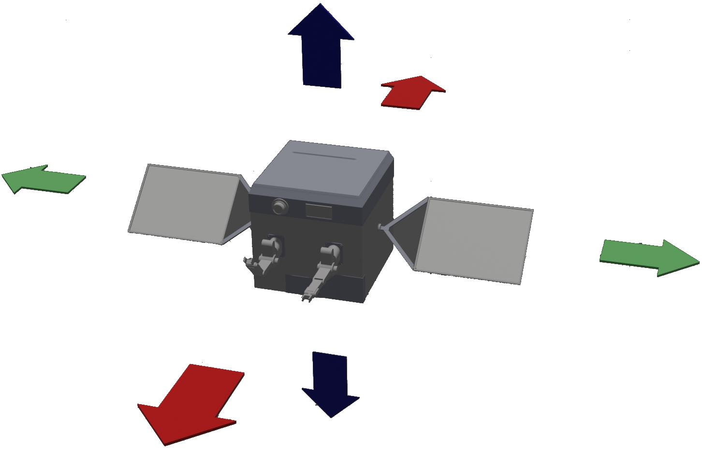

Story and Narrative
It's the year 2103 AD and most of Earth's satellite launch programs have
shut down due to the dearth of fossil fuels left.
This meant that neither could new satellites be launched, nor could humans be sent to repair the
existing, and slowly failing ones.
In an attempt to keep the existing satellites functional, Dynaspace Corp. has
developed O.S.M.O.S to repair and maintain satellites in orbit.
On-Orbit Satellite Maintenance and Operation Spacecraft
(O.S.M.O.S)
is an innovative
uncrewed spacecraft used to service, repair and maintain satellites

Equipped with robotic arms,
solar panels, aux power and
a music
player to warm things up for a stranded astronaut!
It is the player's job to remotely operate OSMOS to carry out each
task they are given. As the levels progress, some secrets are uncovered in the dark of space and
a macabre story unfolds.
Game Mechanics
The mechanics give the player a realistic experience, with navigation being as close
as possible to real physics in outer-space. The controls are intuitive and let the player either
cruise
peacefully across the stratosphere, or cautiously dock into other satellites with no discursion.
There are two modes the player can switch between. Flight mode and
Repair mode.
Flight
OSMOS is equipped with thrusters in different axes to allow the player to manoeuvre it
in orbit.
In zero gravity inertia is maximum. The thrusters can be used for retrograde bursts to slow
down movement.
Player can also rotate OSMOS freely using the mouse or the analog stick.
To avoid motion sickness, players may stop OSMOS's movement by pressing the Stabilize
button.

Repair
Repair mode uses the same controls as Flight mode for different functions.
Once in the Repair mode, player can control the two mechanical arms and perform the required
actions.
Miscellaneous
OSMOS is equipped with a high-power flashlight that can be toggled on/off.
Depending on the level progression, other features like backup power supply, speed boost and
music player are unlocked.